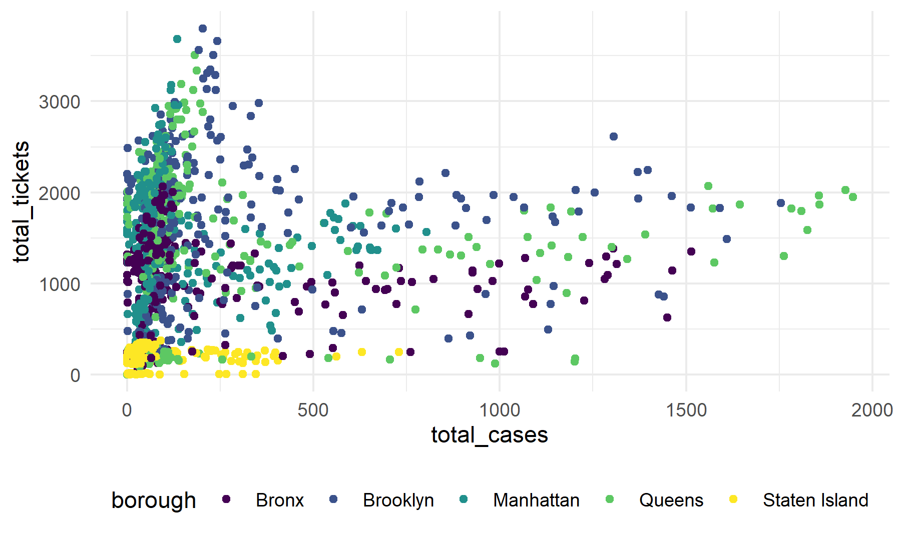
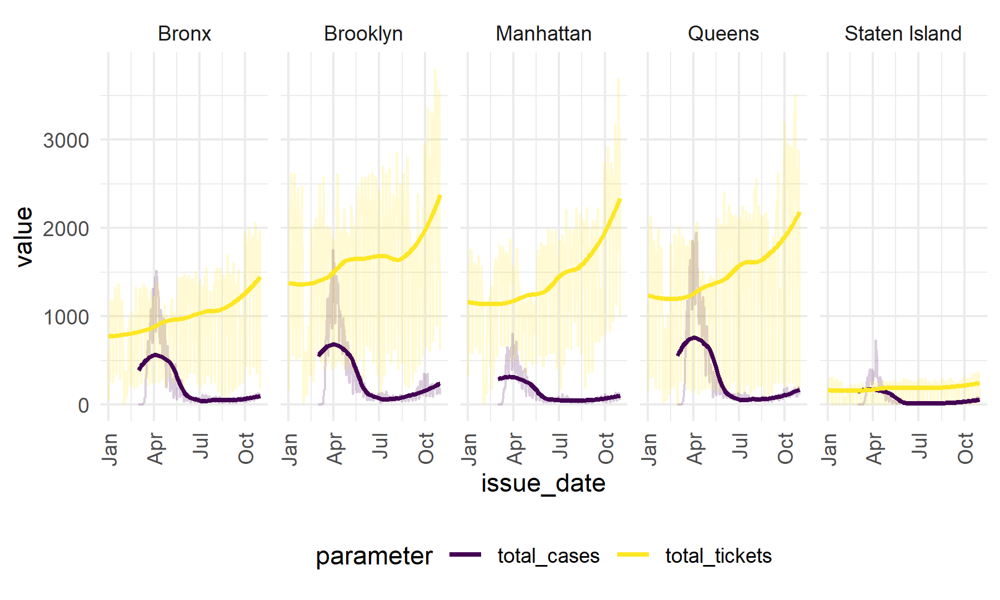

Waveley Qiu (wq2162) 12/6/2021
url <- "https://raw.githubusercontent.com/nychealth/coronavirus-data/master/trends/data-by-day.csv"
covid <-
read_csv(url(url)) %>%
janitor::clean_names() %>%
select(date_of_interest, bx_case_count, mn_case_count, si_case_count, qn_case_count, bk_case_count) %>%
pivot_longer(
cols = bx_case_count:bk_case_count,
names_to = "borough",
values_to = "total_cases"
) %>%
mutate(
borough_abbr = str_replace(borough, "_case_count", ""),
borough =
case_when(
borough_abbr == "bx" ~ "Bronx",
borough_abbr == "bk" ~ "Brooklyn",
borough_abbr == "mn" ~ "Manhattan",
borough_abbr == "qn" ~ "Queens",
borough_abbr == "si" ~ "Staten Island"
),
date_of_interest = as.Date(date_of_interest, "%m/%d/%Y")
) ## Rows: 645 Columns: 67
## -- Column specification --------------------------------------------------------
## Delimiter: ","
## chr (1): date_of_interest
## dbl (66): CASE_COUNT, PROBABLE_CASE_COUNT, HOSPITALIZED_COUNT, DEATH_COUNT, ...
##
## i Use `spec()` to retrieve the full column specification for this data.
## i Specify the column types or set `show_col_types = FALSE` to quiet this message.violation_covid <-
violation %>%
count(issue_date, borough) %>%
rename(total_tickets = n) %>%
left_join(covid, by = c("issue_date" = "date_of_interest", "borough"))
violation_covid_long <-
violation_covid %>%
pivot_longer(
cols = total_tickets:total_cases,
names_to = "parameter",
values_to = "value"
)Here is a plot of total tickets against total cases, irrespective of issue date, and colored by borough:
violation_covid %>%
ggplot(aes(x = total_cases, y = total_tickets, col = borough)) +
geom_point()## Warning: Removed 295 rows containing missing values (geom_point).
violation_covid_long %>%
ggplot(aes(x = issue_date, y = value, col = parameter)) +
geom_line(alpha = 0.2) +
geom_smooth(se = FALSE) +
xlim(c(as.Date("01-01-2021", "%m/%d/%Y"), as.Date("11-21-2021", "%m/%d/%Y"))) +
theme(axis.text.x = element_text(angle = 90, vjust = 0.5, hjust = 1)) +
facet_grid(. ~ borough) ## `geom_smooth()` using method = 'loess' and formula 'y ~ x'
## Warning: Removed 295 rows containing non-finite values (stat_smooth).
## Warning: Removed 59 row(s) containing missing values (geom_path).
We will now perform a Granger-causality test to see if knowing the previous day’s number of COVID-19 cases is helpful in predicting the number of parking violations given out. We will perform this test at an α = 0.05 significance level.
grangertest(total_tickets ~ total_cases, order = 1, data = violation_covid)## Granger causality test
##
## Model 1: total_tickets ~ Lags(total_tickets, 1:1) + Lags(total_cases, 1:1)
## Model 2: total_tickets ~ Lags(total_tickets, 1:1)
## Res.Df Df F Pr(>F)
## 1 1222
## 2 1223 -1 22.867 1.947e-06 ***
## ---
## Signif. codes: 0 '***' 0.001 '**' 0.01 '*' 0.05 '.' 0.1 ' ' 1As the test’s p-value is less than our predetermined significance level of 0.05, we reject the null hypothesis that